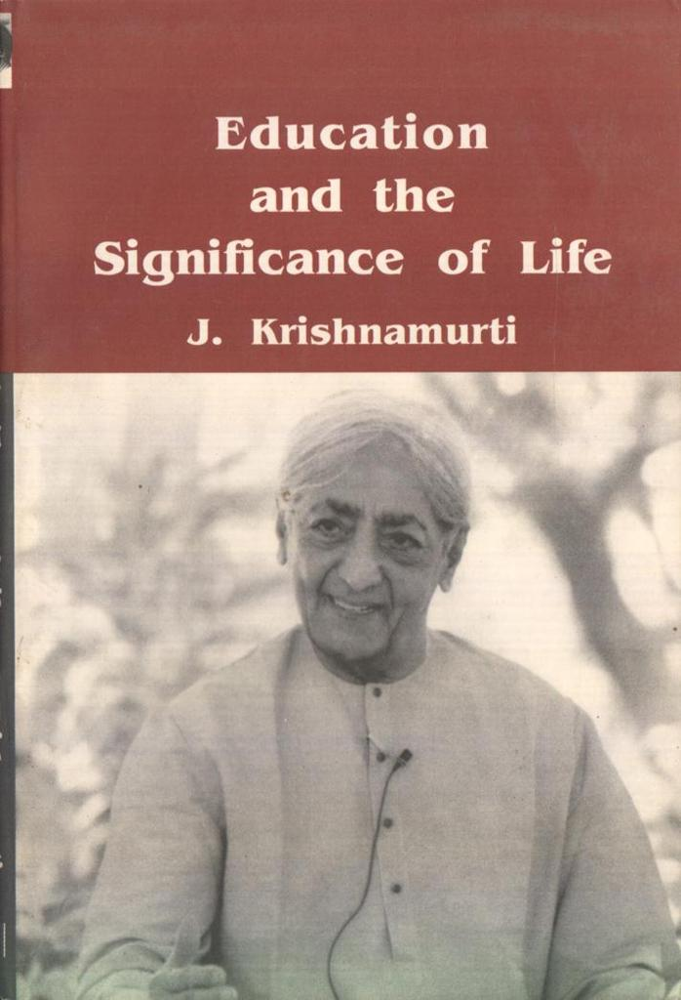

Summary – Education and the significance of life – J Krishnamurti
This book is about education, its significance to life and how education can help one find the significance of life. In this series of lectures, Krishnamurti explores and explains various aspects that influence education, and are influenced by education in turn.
In the initial chapters, Krishnamurti presents a case for urgently thinking about education and its significance for life. He talks about how the current approach to education is superficial and does not address deeper questions about life.
In the next few chapters, he dwells on the question of what the right kind of education is, asking the readers to question their ideas and explore their own thoughts. He states clearly that there is no one right method for providing the right kind of education. He lays out how the right kind of educators, parents and schools can bring about such an education of children.
In the later chapters, he speaks about sex, marriage, art and creativity, how we relate to these ideas and how our relationship with these ideas creates conflict in us. He emphasizes that an educator should have clarity regarding sex, marriage, art and creativity so that he can help the children see them for what they are and understand how to relate to them, without getting conflicted about or addicted to them.

Summary of the key ideas
Current education system:
All human beings seem to have similar nature – we want to find security and have a good time with as less effort as possible. We try to do this by earning more money, by becoming important persons and building other forms of security around ourselves. These achievements become important to us as these give us comfort. The urge to be successful along these lines creates a fear of not being able to attain these goals. Even after we reach these goals, protecting the comfort we get from them becomes very important, and we continue to be fearful. This fear makes us scared on new experiences and adventures. We are afraid to be different, to follow a course of action different from established societal norms. We confirm to authority and tradition.
Current education system is built around the achievement of these goals. This system builds skills, emphasizes techniques, capacity and efficiency. We start to depend on these for our psychological security and that does not help. We continue to live fearfully, contributing to the misery and destruction in the world. Conventional education contributes to the conflicts we experience around us, within ourselves, with fellow humans and with nature. This cannot be right, as right kind of education should be free us of conflicts within, help us build relationships with other people, environment and society, should lead men and countries living peacefully with each other and universal peace.
Krishnamurthy says that we are all disillusioned with the current education system, but we don’t know what to do, what to pursue, what kind of questions we need to ask and address to bring up our children. Systems cannot be blamed for our plight and we cannot expect miraculous changes in the current system. The individual is important, he should bring about a change in himself by understanding himself and the total process of self-awareness will bring in peace to the world.
Right kind of education
Right kind of education should help an individual be mature and free, to be affectionate and to love others, capable of dealing with life as a whole. Such an education should foster an understanding of ‘what is’ and help a person experience the integrated processes of life. When we face life and its experiences as they come, we develop an understanding of ourselves in relation to everything around us, keeping our intelligence highly awakened. Intelligence highly awakened is intuition, which is the only true guide in life.
The right kind of education should offer individual freedom, letting love and goodness bloom. It should help each individual student become aware of the conditioning influences around him and his own desires, that limit his mind and create fear. This will bring in thoughtfulness and consideration for others, without the promise of rewards or punishments. Otherwise, individuals get caught up in self-fulfillment, which causes conflicts and sorrows.
The right kind of education encourages the spirit of inquiry. We tend to stifle this spirit of inquiry as it leads to discontent and disturbs our sense of security but that is not right. Only when we encourage the children to question, will they be alert and develop keen insight. We should learn to think clearly and without bias, not to be influenced by authority or persuasion. The young should foster their discontent and keep the spirit of inquiry alive, not fall into the routine of job, security and permanency.
Understanding of the entire process of one’s own consciousness is important to be an integrated human being. Only when we are aware of our conditioning and our responses, hopes and fears, there is a chance to go beyond the self. We need love and right thinking to bring about this revolution, within ourselves. Without love and right thinking, we will end up again in war and destruction. We will have peace only when we understand the causes of war, examine our attitudes towards our life and others. Right kind of education brings about this understanding.
How to bring about the right kind of education – What does not work
Not through working towards an “ideal”: When we work for an ideal, we are working for ‘what should be’ completely neglecting the present ‘what is’. Our concern should be to help the individual understand himself. Once we are aware of what is, we should also not struggle with the awareness of what we are not. We should be interested fostering such an understanding in the child, rather than what to shape the child into.
Not through “frameworks”, “systems” and “methods”: When we raise our children according to a framework and a system, we are actually training them to think in a particular way. Inculcating some values in children to make them conform to some ideals would be conditioning them. This does not allow them to grow into integrated individuals as they will not be able to think intelligently.
When there is a method devised, even if it is done by a very thoughtful and intelligent person, there will be consideration for children only if they fit into it. The measurement of the child and his achievements start according to that method. This might be convenient for the educator, but it does not help in developing an integrated individual.
Not through conditioning, discipline, fear or authority: Conditioning will not help people be happy or become intelligent. We are not interested in letting love and goodness flower if we are ourselves fearful showing apathy and no affection. We should take responsibility for spreading chaos and misery if we fail to bring in a radical change from the conditioning of the student. Whenever there is a revolt, the powerful become oppressive, either through persuasion or force.
Discipline has become one of the most important value in social structure. We practice various forms of discipline as it gives us more security and it gives good results. The ‘end result’ becomes more important than the means. However, the means determines the end. The danger of discipline is that system becomes more important than human beings. In that case, there is no love. Resistance and discipline do not give us the freedom. Freedom is not a goal which is to be achieved at the end. It is at the beginning.
Fear does not let intelligence thrive. Discipline may suppress fear but not remove it totally. Fear is instilled at school and at home in the hearts of the young. The adults around a child, the teacher and parents do not work on understanding the fears of the child. As we grow up, these fears guide our decisions and whole outlook of life. Fear cannot be the basis of right action. If the educator uses rewards and punishments, then he is breeding fear. If we do not make the ‘end result’ important, then we remove the fear of punishment, attraction of the rewards and any other compulsions.
Authority does not encourage understanding, it works in its ability to compel others to do what it wants done. There is no love in authority and compulsion, without love the individual does not relate to people, nature and society. There is no cooperation in relationship when there is authority.
If making the child obedient is the goal, then authority, discipline and compulsion may work. When we compel, the children obey just outwardly. Internally they become obstinate, impudent and adamant. Children become fearful and antagonistic. Discipline implies resistance. There is so much focus on the mind that we are failing to see the heart. Resistance and compulsion will not bring love and understanding.
Not through “religious” education, rituals and beliefs: Religious education should foster relationship between individual and the environment. There is no existence without this relationship. When a parent and educator believe in this relationship, then their attitude and conduct convey the true meaning of spiritual life to the child. Rituals and beliefs, knowing them and following them is not true religion. A child should grow up without these encumbrances and only then will he truly inquire into the nature of reality of God.
The religion we see today does not foster individual freedom and integrity, it merely makes people follow some rituals. Religion in its true sense is a state of peace when there is self-knowledge and freedom. True religious education would be to help the child to be self-aware, read in depth and understand, and to determine the difference between the real and the temporary.
Not through emphasis on nationalism, patriotism or the state: When the mind if free of ideologies and biases, it can actually see the truth. Beliefs, religions and ideologies are setting man against man, creating conflicts, not only between countries, but between societies and between people within the same society. If we identify ourselves with a country, when security is important, and we are conditioned by our dogmas, there will be strife and misery within us and in the world.
Patriotism, while it is encouraged in schools and in the books, causes racial egotism by telling great stories about our country and our heroes who fought for our country and portrays our way of life better than others. This feeling feeds our excessive pride in belonging to this country and we feel we need to protect the country at any cost. We become ready to kill and be killed by someone. We should realize that human beings are more important than ideological boundaries.
Nationalism, like patriotism, makes people conscious of class and race and is separative in nature. Nationalism generates war, the spirit of nationalism comes from the aspiration to belong to a group greater than ourselves, to gain and to hold on to what we have gained. From this, springs the need to protect our sovereign States in the form of armed forces. Human life is undermined compared to properties and ideas. Parliaments and systems which uphold nationalism will never bring war to an end. Every separate group within a country, between countries is a source of war as they are guarding their sovereignty from external influences.
There is no hope for peace as long as education is managed by the state. The sovereign state does not want its citizens to think freely, it expects conformity, controls people through propaganda and distorted historical representations. Current education system is supporting the cause of the state by promoting ‘what to think’ instead of ‘how to think’. If we think differently from the prevailing systems, we become dangerous, free institutions might turn out people who think differently from the existing regime. These ideologies do not come from anywhere outside, it is our beliefs which are projected in those forms, and the government is what we are. We need to change fundamentally to bring in the right education and a peaceful world.
How to bring about the right kind of education – What may work
In the right kind of environment: What we (as parents and educators) think, say and do, matters and only that matters as it creates environment and environment can help or hinder a child. The school and home should not be contradictory to each other, so both parents and educators should reeducate themselves. The contradiction between the private life and life in a group creates endless conflicts in a person. This conflict is sustained through out in the wrong kind of education. We will not be able to give right kind of education unless we transform ourselves.
We must realize that learners are not merely conditioned by the environment. We are the environment. There are different entities in us revolving around ‘me’, the self. These several entities are our desires and from here the division between ‘me’ and the ‘mine’ starts. There is a gap between the ‘me’ and the environment. This is the beginning of inward and outward conflict. Self-knowledge is essential if one has to become free from the influences of the comfort of ‘self’.
With the right kind of thinking: We cannot achieve integration by conforming to current values. Even the recognition that we are confirming, brings about intellectual awareness but does not resolve the issue. Only when we become aware of what is causing the hindrance to our self-awareness and independent thinking, then we can be free from these influences. What we think matters, not what others want us to think. Without such an independent thinking, we will continue to conform and live in fear. The fears which are obvious and outward can still be identified and worked upon. The unconscious fears are the most difficult as we do not even know they exist. These fears guide our actions without our knowledge. We can be free of fear only with conscious effort. If we constantly keep watch over our thinking, we can bring some fears to the surface and build appropriate relationship with the environment.
As parents and teachers, it is our responsibility to think differently from the traditional beliefs. “A true educator is concerned with right living, right education and right means of livelihood”. Peace cannot be achieved by working superficially. It will result in one reform over other and then people divulge again into multiple ideologies. We need to understand things deeply, to stop the destruction caused by our own aggression and insecurities. Only then there is hope for our children and emancipation for the world.
With freedom and ‘intelligence’, not just ‘intellect’: Modern education brings in more and more theories and facts with little focus on understanding. This is intellect, but not intelligence which requires the integration of the mind and the heart in action. Intelligence comes with love. When thought functions independent of emotion, it is intellect, whereas intelligence is the ability to feel and reason. With only intellect and no intelligence, we will lead our society to chaos and destruction.
There should be a spirit of freedom and intelligence in a child’s studies. The students should be encouraged to ask questions rather than accept readymade formulas and conclusions. Teachers can provide guidance when they are free from dominance and help the children towards creative understanding and freedom, and not driving the child towards a goal. The student should be able to find out what he is interested in through right kind of education. A true teacher does not bind himself to any ideology or belief or country. He is free from the compulsion of society or any government. An educator is the foundation for true culture.
In the right kind of schools: A school which is successful in a worldly sense is a failure as an educational center. A large building consisting of so many hundreds of children will be churning our clerks and salesmen, industrialists, people who are technically efficient. The hope of integrated individual can only be achieved only when there is attention available to each individual in school. There should be a small school with limited number of boys and girls and right kind of educators.
The teachers and children should meet on a regular basis to discuss all the matters relating to the whole group and its well-being. A student council should be formed along with some teachers to address issues of discipline, cleanliness, food and so on. Self-government in school should be encouraged, for when they come out of school they are ready for self-government outside too. If a child learns to be dispassionate, intelligent and considerate in discussions, he will be able to face complexities of life efficiently. The school should encourage children to know each other’s challenges, difficulties and peculiarities.
Through the right kind of educators: The right kind of education begins with the educator. If the educator is not free from his own patterns of thought, he cannot teach that to children. As educators, we need to educate ourselves rightly. We should be concerned with our own education first than to worry about future wellbeing and security of the child.
Being a teacher is not a profession, but a way of life for a true teacher. One should teach only if they have the passion to teach. For the right educator, teaching is not self-fulfilling, but self-renunciation.
A teacher should understand what ‘teaching’ is according to him. A teacher must be constantly alert and aware of his own thoughts and feelings. A teacher must understand what intelligence is to awaken intelligence in a child. If the teacher is not free, then we cannot help the child to relate to others and the environment and work on their fears, unhappiness and frustrations.
A teacher must have interest in working in the school, they should come voluntarily. If the teachers have to help each other and help students to understand the right values, there must be constant and alert awareness in their daily relationship. Each teacher should feel responsible. There is no need for a central authority if everyone is responsible and regulate themselves. When there is a feeling of equality among all the teachers, then there is no place for fear of others and all misunderstandings can be resolved through discussions. This is essential in the right kind of school.
Each teacher is entitled to leisure time and everyone should facilitate that in the school. Only then will the teachers have the motivation and energy to spend with children and build direct relationship with them. Each child requires patience, alertness and intelligence to study. The right kind of educator should have the skill, immense interest and a sense of affection to be able to cater to individual needs of every child.
With collaboration between parents and teachers: People undergo rigorous training to become engineers, lawyers and doctors but for becoming parents there is no training, even though it’s a very important task. Many parents shift the responsibility of the wellbeing of the child to the school, it becomes the responsibility of the educator to educate the parents as well. The educator should explain the difficulties, aptitudes and the child’s temperament to the parents and make them understand what he is trying to do for their child. Right education is a shared task between parents and teachers which demands patience, consideration and affection.
If parents love their children, they will not be nationalistic, they will not support a State which brings war, and kills their children. They will discover how to relate to property and understand how false importance to property destroys the world. They will not belong to any organized religion as it creates rifts between men, they will leave envy and conflict and work on changing the structure of present day society. They make sure they get the education that will help them be sensitive, intelligent and integrated.
With understanding and love: Through careful study and understanding of difficulties, tendencies and capacities of each child, we can help him to be integrated and intelligent.
Deep understanding and insight are necessary to educate a child. We need to constantly observe a child to understand him. We should not burden the child with our values and idiosyncrasies and act as owners and dominate them. If we regard our children as continuation of ourselves and expect them to fulfill our ambitions, then we will be building an environment without love, the children will get into pursuing self-centeredness.
Role of sex, marriage, art and creativity
We strive to find ways to lose our ‘self’ and achieve a state of happiness. Creativity gives most of us that satisfaction. When we do everyday tasks, we feel it only through the brain, and repeat mechanically. If we are not creative, the only other means of creativeness, to help lose oneself, is sex. We lead busy lives, running from one end to the other, without experiencing moments of creativity. Sex becomes the only outlet, an experience we seek again and again.
Sex in itself is not a problem but the desire to capture the state of happiness again and again is. Securing this happiness becomes an important goal. Fear sets in and makes us conform to authority and hinders creative living. Only by examining our hearts and mind, we will be able to find out our desires. If we are thoughtful and affectionate, desire does not dominate the mind. Sensation becomes all-consuming when there is no love.
When we are young, we deal with our sexual urges by disciplining and controlling, fearful of becoming lustful. Organized religions concern themselves about our sex lives, but not equally violent things like patriotism, envy, ruthlessness, hunger for power and success. This is because they depend on our hopes and fears for their very existence.
The institution of marriage cannot provide answers to the issues of sex, if there is no understanding of the process of desire. Love is not of the mind, it is independent of thought, demands and reactions. When there is love, sex is never a problem. The hindrances of the mind are the problem, therefore it’s important to understand the process of the mind.
If the parents and the teachers are themselves caught in this maze, they will not be able to help the child develop their heart and the mind. What we are today is the result of series of influences and accidents, and each of us have to understand the confusion of our own nature.
In the pursuit of losing the self, people take to art, drink, follow religious doctrines. When we try to do things to escape ourselves, we become addicted to them. The right kind of education should help the individual to face his problems rather than look for escape, eliminate conflict and then the individual can see his way to being creative.
Art which is not integrated with life has no importance. If art is separate from our daily life, it becomes removed, artificial. It becomes just a superficial desire to express ourselves and to escape from what is. Art should be integral part of our lives, we should strive to bridge the gap between our life and the technical knowledge we have acquired.
We should be aware of the emptiness in our hearts and mind, and hold ourselves away from other sensations and stimulations, keep ourselves open and be sensitive, then there can be creation and we find the joy of creativity. We might think that if we learn a technique, we can be secure and happy. But creative happiness comes only when our inner self is rich, and it is not attained through any system. Self-improvement is another way of securing ‘me’ and ‘mine’, is not creative, it is not even love of beauty. When there is constant awareness of the mind, and the hindrances it has, creativeness comes into being.
One can be creative without any talent. Creativeness is a state of mind where there are no conflicts and sorrows, no desires. In this state, truth comes into being. There is not sensation of self. The mind does not seek anything. In this state, there is creation.
We will be able to develop sensitivity in the young only when we are sensitive to beauty and to ugliness. We will be alert and be able to see things only when we are quiet. We should work to awaken the joy of seeing in a child, seeing what man has created and also the beauty of nature.